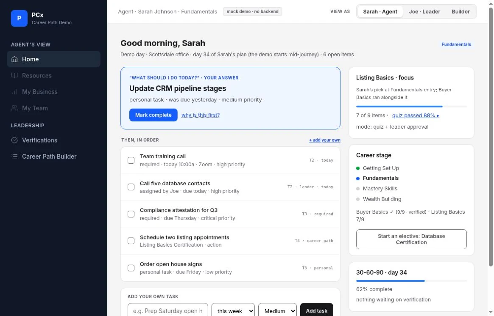
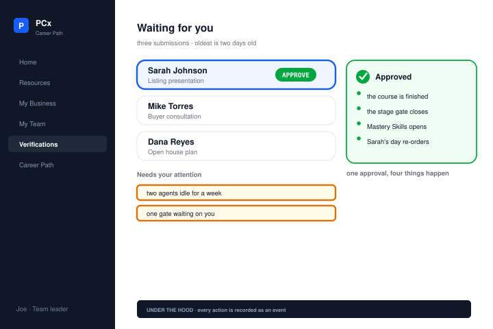
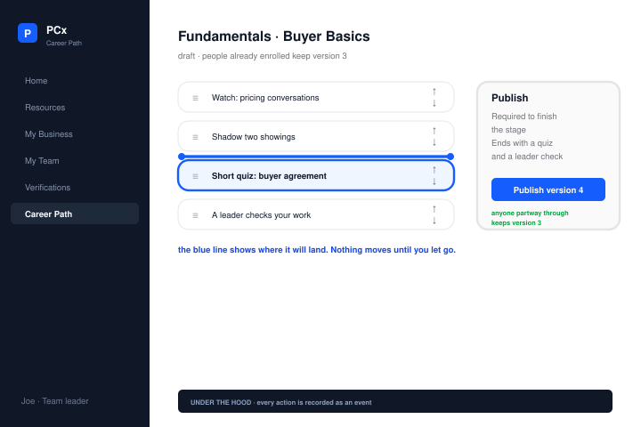

02 / PCx Career Path
Daily tasks and
career progression
An interactive frontend prototype for a real-estate career-path platform.
02 / PCx Career Path
Requirements synthesis & prototyping

Public work sample: 2026 · Project duration not specified.
My role
I reviewed the requirements for career progression and daily work, then developed an AI-assisted frontend prototype of the proposed daily tasks and career stages.
Resolve conflicting requirements.
Used as both a career stage and a production level.
Use the founder’s latest direction; keep unresolved decisions open.
- Getting Set Up
- Fundamentals
- Mastery Skills
- Wealth Building
Case-study summary of the documented requirements, not an original research artifact.
Read the requirements decision
The brief used different stage names and completion rules in different places. It also treated “Productive Agent” as both a career stage and a production level.
I used the founder’s most recent dated direction to resolve conflicts rather than combining incompatible versions. The proposed path follows four stages: Getting Set Up, Fundamentals, Mastery Skills and Wealth Building. Questions that still required the founder’s decision stayed open; mechanisms not specified in the sources stayed labeled as proposals.
The rule in the prototype
Due work comes first.
- 01 / OverdueMedium-priority task
- 02 / Due todayHigh-priority work
To answer the founder’s “What should I do today?”, I proposed urgency before priority, with “Why is this first?” explaining the rule.

Three prototype views
Detail of the recommended task and its ranking explanation. Open to inspect the full screen.Overdue tasks appear first. “Why is this first?” explains the order. The agent’s career stage stays beside the task list.


The agent-day screenshot is original. Verification and path-builder views are reconstructions. All use mock data. Select an image to zoom in.
I delivered the frontend prototype, proposed architecture and roadmap for discussion.
Open the original prototype External prototype Sample data